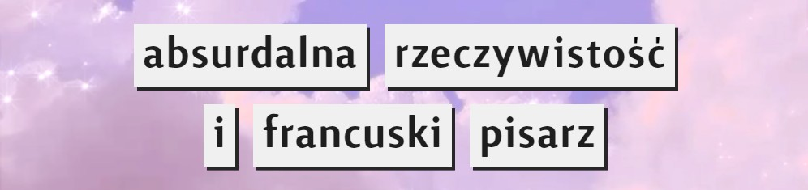
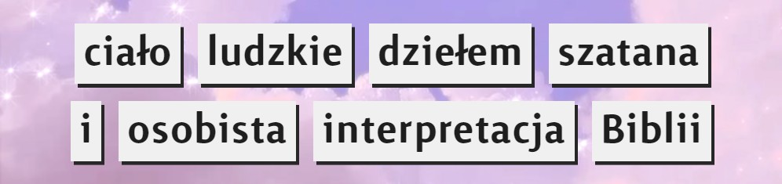

FILOZOFIA
Czym jest filozofia?
Filozofią nazywamy systematyczne i krytyczne rozważania na temat podstawowych problemów i idei, dążące do poznania
ich istoty, a także do całościowego zrozumienia świata. Na tej stronie znajdziesz ciekawe kierunki, zagadnienia i teorie filozoficzne. Klikając na obrazek, dowiesz się więcej o danym zagadnieniu.
1. Absurdyzm i mikropowieść Alberta Camusa

2. Determinizm, czyli czy wolna wola istnieje?
3. Antyintelektualizm, jajogłowi i płaska ziemia
4. Pozytywizm, czyli kult pracy i nauki
5. "Człowiek miarą wszechrzeczy", czyli subiektywizm
6. Nieuchronność przyszłości, czyli fatalizm
7. Antynatalizm, czyli dylemat moralny prokreacji
8. Pryscylianizm i legenda o św. Aleksym

9. Pitagoras nie tylko o trójkątach, czyli pitagoreizm
10. Życie bez celu, czyli nihilizm egzystencjalny
Nadia Kobiela